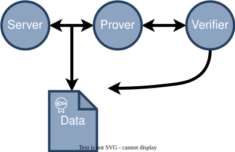

TLSNotary
Proof of data authenticity
Export data from any web application and prove facts about it without compromising on privacy.
What can TLSNotary do?
With TLSNotary, you can create cryptographic proofs of authenticity for any data on the web, even your private data. Using our protocol you can securely prove:
Is it secure?
One may assume that TLSNotary requires a “man-in-the-middle” setup where the Notary snoops on the connection with the webserver. Fortunately, this is not true! Data is kept private even from the Notary.
See below for more details on how it works.
What's the catch?
TLSNotary does require a trust assumption. A Verifier of a proof must trust that the Notary did not collude with the Prover to forge it. This trust can be minimized by requiring multiple proofs each signed by different Notaries.
In some applications the Verifier can act as the Notary themselves, which allows for fully trustless proofs!

How it works
TLSVerifier leverages the widely-used TLS (Transport Layer Security) protocol to securely and privately prove a transcript of communications took place with a webserver.
The core of the TLSVerifier protocol involves splitting TLS session keys between two parties, the Prover and the Verifier. Through secure multi-party computation (MPC), the Prover's requests to a TLS-enabled webserver are encrypted and authenticated.
During the protocol neither the Prover nor Verifier are in possession of the full TLS session keys, they only hold a share of those keys. This ensures the security assumptions of TLS while enabling the Prover to prove the authenticity of the communication to the Verifier.
All of this is achieved while maintaining full privacy. The Verifier remains unaware of which webserver is being queried, and the Verifier never has access to the unencrypted communications.
Moreover, our protocol operates transparently to the webserver. In fact, the webserver remains unaware that this process is taking place.
Since the validation of the TLS traffic neither reveals anything about the plaintext of the TLS session nor about the Server, it is possible to outsource the MPC-TLS verification to a general-purpose TLS verifier, which we term a Notary. This Notary can sign (aka notarize) the data, making it portable in a privacy preserving way.
We're rebuilding the protocol from the ground up.
Below are some development goals on our roadmap: